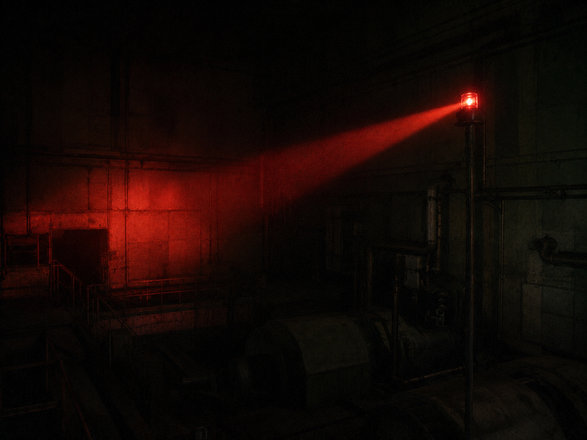

▓▓▓▓▓▓▓▓▓▓▓▓▓▓▓▓▓▓▓▓▓▓▓▓▓▓▓▓▓▓▓▓▓▓ · D E S C E N T · 17 / 40 · ▓▓▓▓▓▓▓▓▓▓▓▓▓▓▓▓▓▓▓▓▓▓▓▓▓▓▓▓▓▓▓▓▓▓

The alarm was not a warning to us. It was the sound of the Core being heard. Something out in the dark turned toward it.
no letters — the bells are the message. press a key. watch the trace, listen, note the pips. short = dit · long = dah · gaps split the letters.